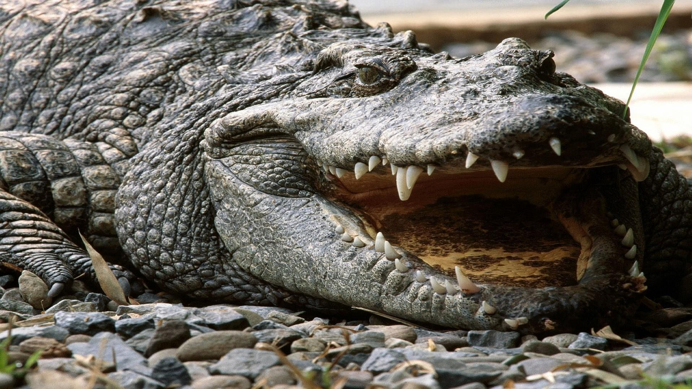
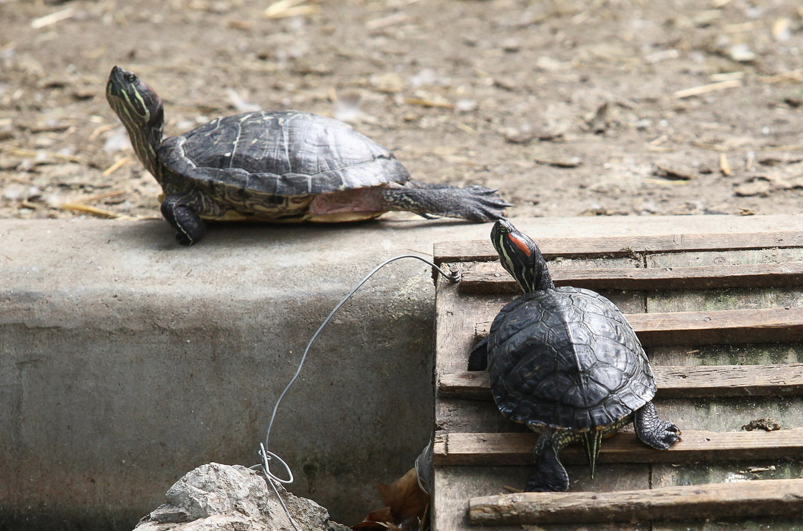
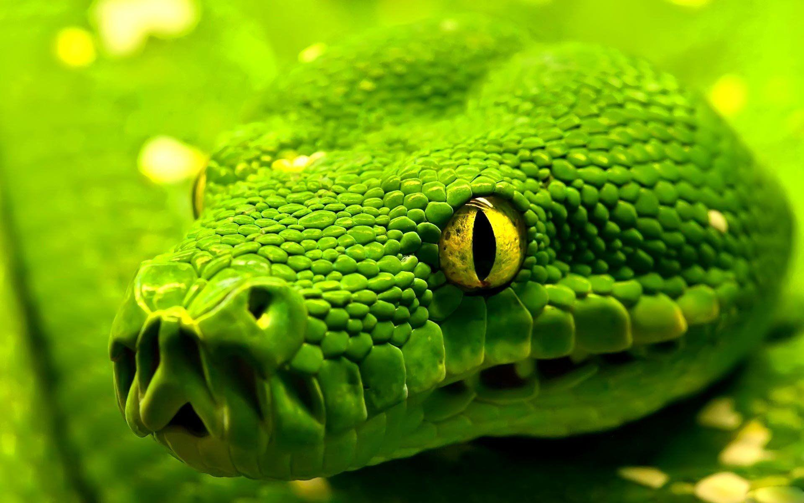

Životinja: Krokodil
Naučno ime: Crocodylus
Životni vek: 70 – 100 godina
Visina: 100 cm
Porodica: Crocodylidae
Masa: 150 – 1000 kg
Svi danas živeći krokodili žive u rekama i jezerima tropskih oblasti i
suptropskog područja, jedino estuarski krokodil (Crocodylus porosus)
može da živi i u moru a često se pojavljuje uz obale različitih
ostrva. Da bi se prilagodile životnoj okolini, ove životinje veoma
dobro plivaju i prikrivaju se u vodi tako što miruju uronjene u vodu,
pri čemu iz vode izviruju jedino oči i nosnice. Danas živeći krokodili
dele se u tri grupe sa statusom porodice (alternativno, često se
prikazuju kao jedna porodica Crocodylidae a tri grupe kao potporodice
unutar nje): prave krokodile, aligatore i gavijale. Građa tela kao i
fiziologija današnjih krokodila je izrazito prilagođena životu u vodi.
Tu spada vodoravno spljošteno telo s uglavnom isto spljoštenom
gubicom, dok im je rep spljošten postrance, a krokodili ga koriste
uglavnom kao kormilo. Zavisno od vrste, telo im može biti dugo od 1,20
pa do 7 m, a nađeni su fosili dugi i do 12 m. Krokodili rastu celog
života.

Reptili

Životinja: Kornjača
Naučno ime: Testudines
Životni vek: 30 – 150 godina
Visina: 83 - 100 cm
Masa: 160g – 700 kg
Sa izuzetkom polarnih područja, kornjače žive na svim kontinentima, u pustinjama, morima, rekama i močvarama, a najviše ih ima u područjima sa umerenom i tropskom klimom. Naročito su brojne vrste u Severnoj Americi i Jugoistočnoj Aziji.Sve kornjače se odlikuju oklopom koji je jedinstven u životinjskom svetu. Sastoji se od leđnog i trbušnog dela, koji su međusobno spojeni svojevrsnim koštanim „mostom“. U svom donjem delu oklop je masivne koštane građe. Preko tog koštanog sloja nalazi se sloj kože. Kod kornjača sa mekim oklopom taj sloj je kožast, dok se kod ostalih vrsta preko kože razvio tipičan pločasti oklop. Ploče se dele na grupe (leđne, bočne, ivične, repne itd. u zavisnosti na kojem delu tela se nalaze). Oklop se sastoji od oko 50 kostiju i evoluriao je pre više miliona godina.Današnje kornjače nemaju zube. Raspolažu snažnim aparatom za hranjenje koji se razvio od čeljusnih kostiju. U prošlosti kornjače su imale zube, ali su se oni tokom evolucije izgubili i zamenjeni su preoblikovanim vilicama. Kao i svi drugi gmizavci ni kornjače ne žvaću hranu nego otkidaju komade, pomažući se pri tome prednjim udovima.
Naučno ime: Testudines
Životni vek: 30 – 150 godina
Visina: 83 - 100 cm
Masa: 160g – 700 kg
Sa izuzetkom polarnih područja, kornjače žive na svim kontinentima, u pustinjama, morima, rekama i močvarama, a najviše ih ima u područjima sa umerenom i tropskom klimom. Naročito su brojne vrste u Severnoj Americi i Jugoistočnoj Aziji.Sve kornjače se odlikuju oklopom koji je jedinstven u životinjskom svetu. Sastoji se od leđnog i trbušnog dela, koji su međusobno spojeni svojevrsnim koštanim „mostom“. U svom donjem delu oklop je masivne koštane građe. Preko tog koštanog sloja nalazi se sloj kože. Kod kornjača sa mekim oklopom taj sloj je kožast, dok se kod ostalih vrsta preko kože razvio tipičan pločasti oklop. Ploče se dele na grupe (leđne, bočne, ivične, repne itd. u zavisnosti na kojem delu tela se nalaze). Oklop se sastoji od oko 50 kostiju i evoluriao je pre više miliona godina.Današnje kornjače nemaju zube. Raspolažu snažnim aparatom za hranjenje koji se razvio od čeljusnih kostiju. U prošlosti kornjače su imale zube, ali su se oni tokom evolucije izgubili i zamenjeni su preoblikovanim vilicama. Kao i svi drugi gmizavci ni kornjače ne žvaću hranu nego otkidaju komade, pomažući se pri tome prednjim udovima.


Životinja: Zmija
Naučno ime: Serpentes
Životni vek: 9 – 12 godina
Dužina: 10 cm - 2,5 m
Masa: 25 – 55 kg
Zmije su izduženi, beznogi, mesojedni reptili iz reda Serpentes. Poput svih skvimata, zmije su ektotermna, amniotni kičmenjaci pokriveni preklapajućim lustrama. Mnoge vrste zmija imaju lobanje sa nekoliko dodatnih zglobova u odnosu na njihove gušterske pretke, što im omogućava da progutaju plen koji je znatno veći od njihove glave zahvaljujući njihovim visoko mobilnim vilicama. Da bi se prilagodili njihovim uskim telima, zmijini parni organi (kao što su bubrezi) se javljaju jedan ispred drugog umesto jedan pored drugog, i većina zmija ima samo jedno funkcionalno plućno krilo. Neke vrste su zadržale svoje zdelice sa parom vestigijalnih kandži na obe strane svoje kloake (npr. Boidae). Gušteri su evoluirali izdužena tela bez udova ili sa znatno redukovanim udovima do oko dvadeset pet puta tokom konvergentne evolucije, što je dovelo do nastanka brojnih sojeva beznogih guštera. Beznogi gušteri nalikuju na zmije, ali nekoliko grupa beznogih guštera ima očne kapke i spoljašnje uši, koje zmije nemaju, mada da to pravilo nije univerzalno.
Naučno ime: Serpentes
Životni vek: 9 – 12 godina
Dužina: 10 cm - 2,5 m
Masa: 25 – 55 kg
Zmije su izduženi, beznogi, mesojedni reptili iz reda Serpentes. Poput svih skvimata, zmije su ektotermna, amniotni kičmenjaci pokriveni preklapajućim lustrama. Mnoge vrste zmija imaju lobanje sa nekoliko dodatnih zglobova u odnosu na njihove gušterske pretke, što im omogućava da progutaju plen koji je znatno veći od njihove glave zahvaljujući njihovim visoko mobilnim vilicama. Da bi se prilagodili njihovim uskim telima, zmijini parni organi (kao što su bubrezi) se javljaju jedan ispred drugog umesto jedan pored drugog, i većina zmija ima samo jedno funkcionalno plućno krilo. Neke vrste su zadržale svoje zdelice sa parom vestigijalnih kandži na obe strane svoje kloake (npr. Boidae). Gušteri su evoluirali izdužena tela bez udova ili sa znatno redukovanim udovima do oko dvadeset pet puta tokom konvergentne evolucije, što je dovelo do nastanka brojnih sojeva beznogih guštera. Beznogi gušteri nalikuju na zmije, ali nekoliko grupa beznogih guštera ima očne kapke i spoljašnje uši, koje zmije nemaju, mada da to pravilo nije univerzalno.